Runde 3¶
CI Server Jenkins¶
Jenkins (http://jenkins-ci.org) ist ein Fork des CI-Servers Hudson. Es gibt ihn für verschiedene Betriebssysteme, darunter auch Windows. Das msi-Paket sollte man als Administrator installieren; ein Installationspfad außerhalb von Program Files hat sich zumindest auf meinem Windows 8 - System als nützlich erwiesen.
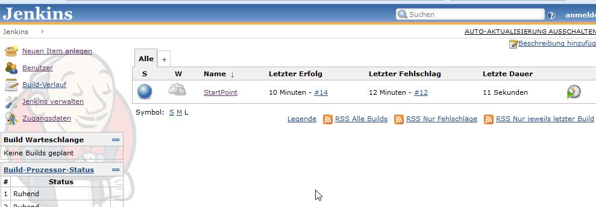Jenkins ist über Plugins flexibel konfigurierbar; in unserem Falle werden wir folgende Plugins installieren:
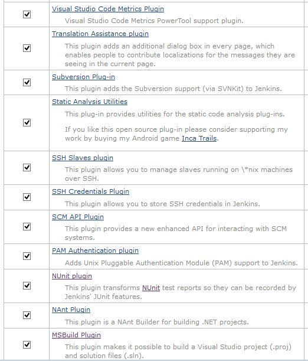- NUnit: Zum Rendern der NUnit-Ausgabe
- MSBUILD: Zum Builden von Solution-Files
- NANT: Zum Anstoßen weiterer Funktionalitäten
- VStudio Code Metrics: Zum Erzeugen einfacher Metriken per metrics.exe
Diese Plugins müssen global installiert und konfiguriert werden.
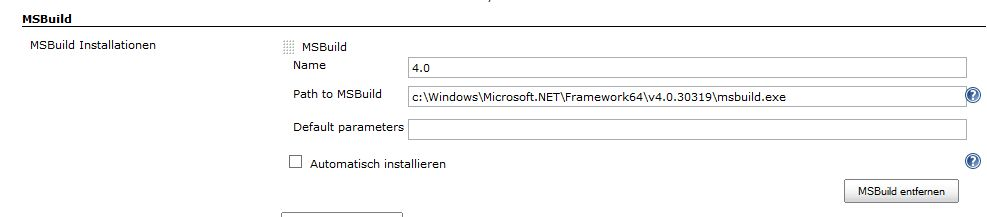 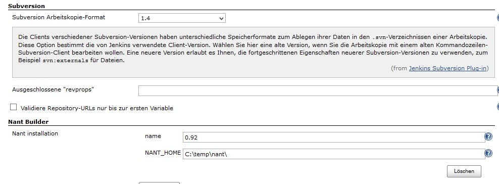 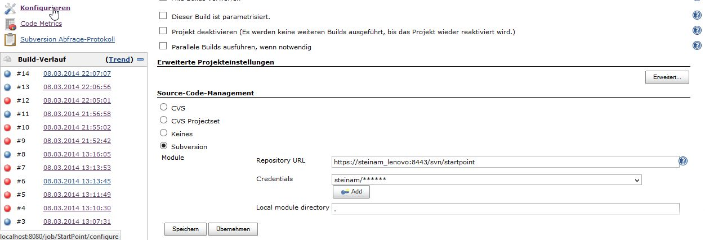Weitere Konfigurationen werden dann innerhalb eines Projekte vorgenommen.
Weiterhin müssen noch Benutzer mit entsprechenden Zugriffsberechtigungen auf jeweilige Projekte angelegt werden.
Jobs anlegen¶
Das Anlegen eines Projektes erfolgt in Jenkins unter Neues Item anlegen
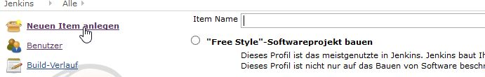 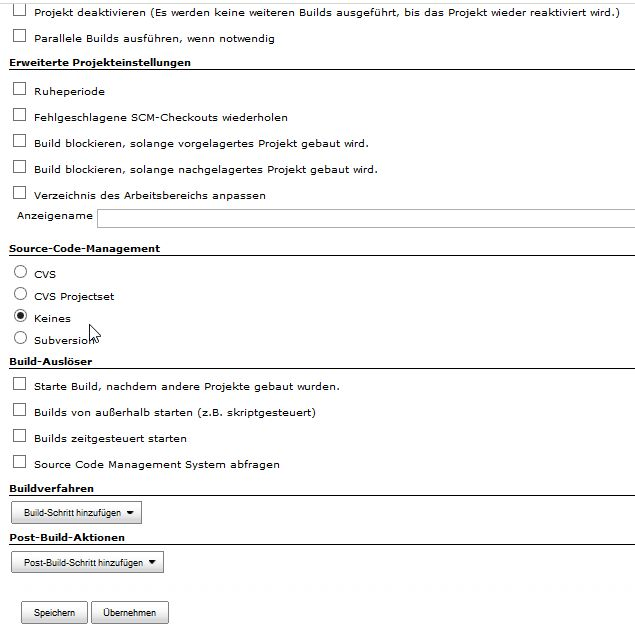Jobs Konfigurieren¶
In unserem beispiel sollen die bisher lokal ausgeführten Bild-Schritte nun durch Jenkins realisiert werden. Dazu sind die Schritte Buildverfahren sowie Post-Build-Aktion zu konfigurieren.
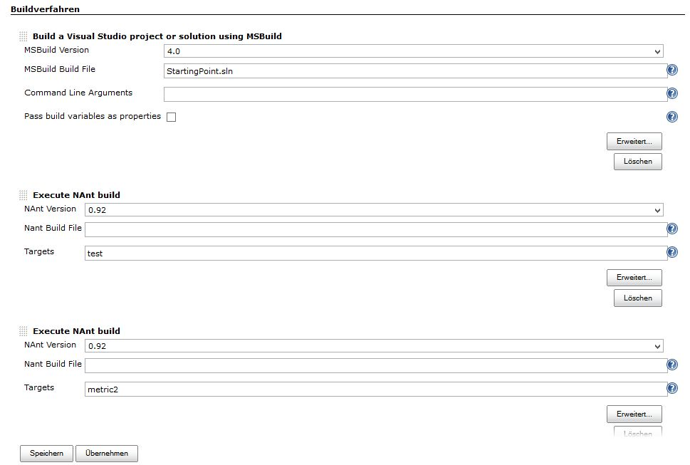Buildverfahren definieren dabei die Aktionen, die ausgeführt werden müssen. Post-Build-Aktionen definieren dabei, was mit den Ergebnissen der Build-Verfahren geschehen soll. In unserem Beispiel werden die Ergebnisse der NANT und Metrics-Ausgaben (XMl-Dateien) über einen „Publisher“ grafisch aufbereitet und in die Übersichtsseite des jeweiligen Buildvorgangs dann integriert. Voraussetzung dafür war natürlich das Installieren der jeweiligen Publisher-Plugins in Jenkins zuvor.
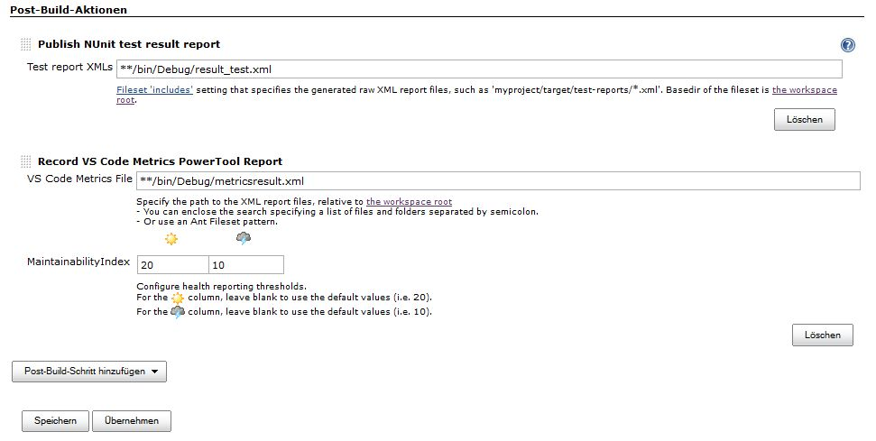Falls alles klappt, sieht anschließend die Startseite eines Projektes wie folgt aus.
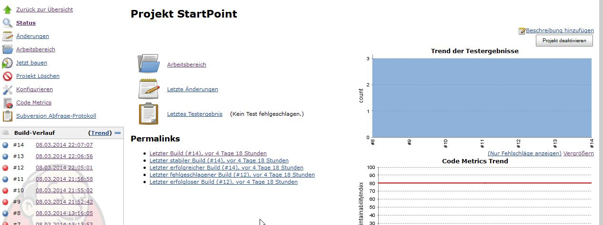Nach dem Klicken auf einen jeweiligen Buildvorgang werden Details dargestellt.
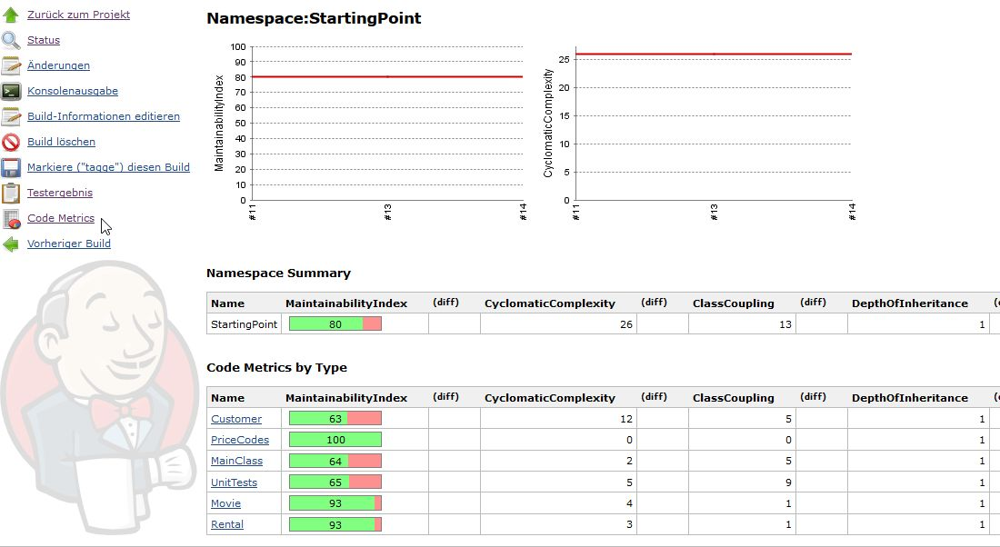 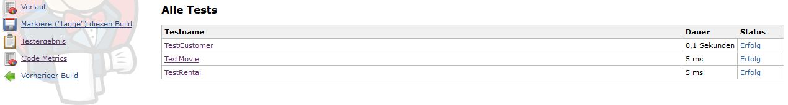Aufgaben:¶
Erstellen API-Dokumentation
Das Programm doxygen (http://www.doxygen.org) erstellt aus dem Quellcode eines Programms eine API-Dokumentation. Der Ablauf der lokalen Erstellung ist wie folgt:
Definieren eines Konfigurationsfiles mit Hilfe eines GUI-Tools (doxywizard)
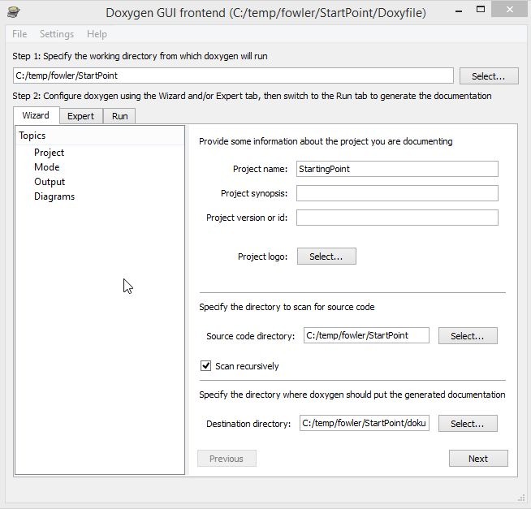Erstellen eines API-Dokumentation durch Aufruf von
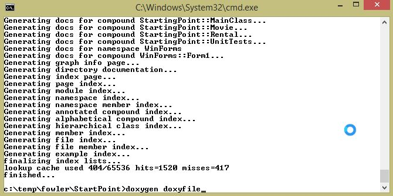
Erstellen Installer Innosetup
Ähnlich wie bei Doxygen kann man mit Hilfe des Programms Innnosetup einen Installer erstellen lassen. Der Ablauf ist prinzipiell der gleich wie bei doxygen.
Mit Hilfe eines Wizards wird ein Konfigurationsfile erstellt, welches dann über ein Konsolenprogramm aufgerufen wird. Dieser Aufruf muss dann in gleicher Weise auf dem CI Server abgebildet werden.
Das Konsolenprogramm für den Aufruf des installers heißt iscc.exe. Dies erwartet als Kommandozeilenparameter die Übergabe eines Konfigurationsfiles.
Die Vorgehensweise auf der CI-Server-Seite ist die gleiche wie beim Erstellen der Doku.
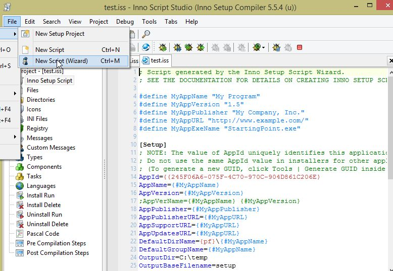 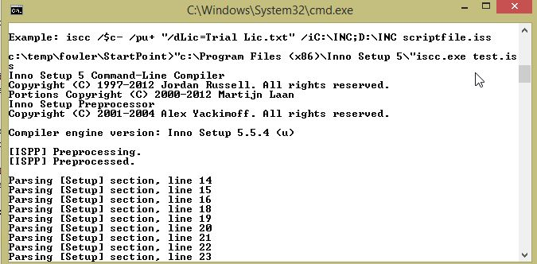 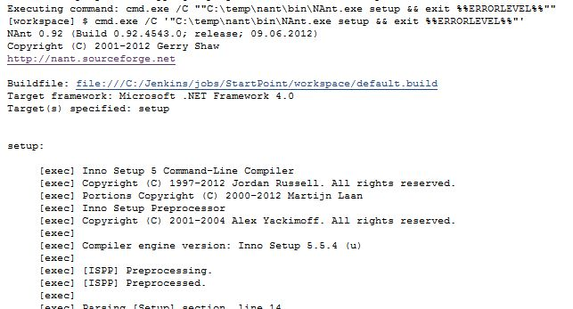Aufgabe
Erstellen sie eine lokal ablauffähige Lösung.
Passen Sie dann die entsprechende Konfiguration an und implementieren Sie diese auf dem CI Server Jenkins. Innosetup (iscc.exe) ist auf dem CI Server installiert.
Zum Ablauf der Erstellung muss natürlich ein neues Target innerhalb des NANT-Buildfiles erstellt werden.
Darstellen von Artefakten
Häufig haben Build-Prozesse auch Ergebnisse in Dateiform. Bei einem Installer wird z.B. am Ende eine Datei setup.exe erzeugt, die man gerne innerhalb des Ci-Servers dann anzeigen würde.
Jenkis kennt für diese Aufgabe die sog. Artefact-Plugins, die solche Dateien dann in der Projektoberfläche anklickbar machen. In unserem Falle wurde das Artifact Deployer Plugin verwendet, um die Datei setup.exe zu verlinken.
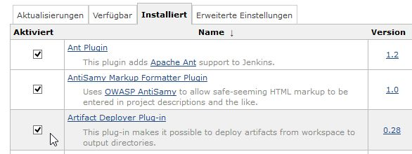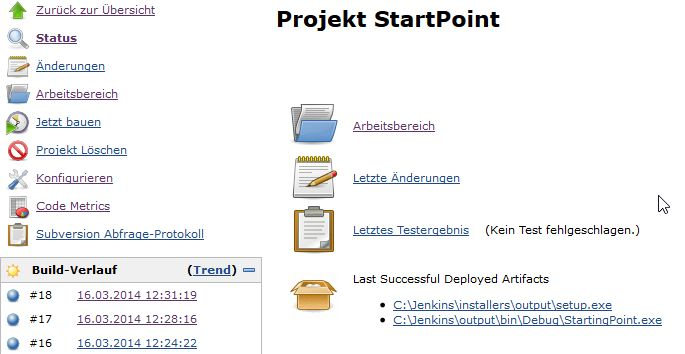Aufgabe
Bilden sie die Ausgabe der Datei setup.exe mit Hilfe des Plugins ab.